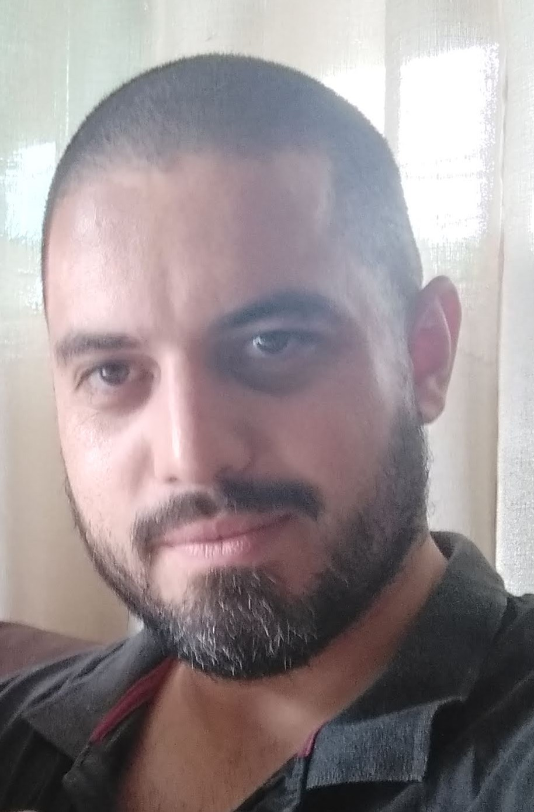

Jefferson Batista
Desenvolvedor JAVA

32 anos | Casado | 1 Filha
Apresentação
Formado em Análise e Desenvolvimento de Sistemas pela Universidade Cruzeiro do Sul.
Durante a formação, além das disciplinas da faculdade fiz alguns cursos de aperfeiçoamento online, iniciei por HTML 5, CSS e Javascript, em seguida lógica de programação e algoritmos, Java Básico, Programação orientada a objetos e banco de dados MySQL.
Atualmente estou estudando JAVA para desenvolvimento backend, e Kotlin para desenvolvimento Mobile.
Pretendo aprofundar o meu conhecimento para dominar a linguagem.
Sempre gostei de tecnologia e hoje busco oportunidades para ingressar na área.
Sou formado em odontologia e estou em transição de carreira.